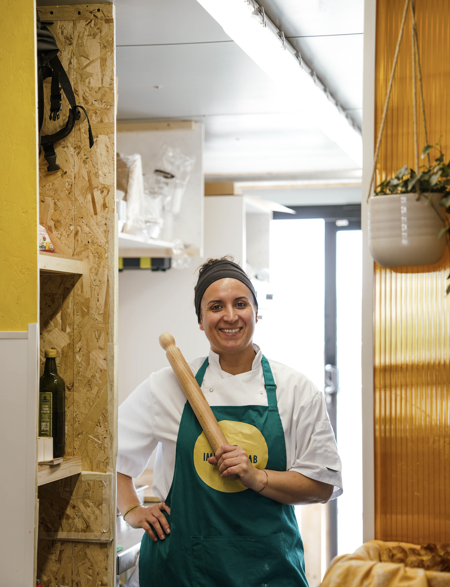
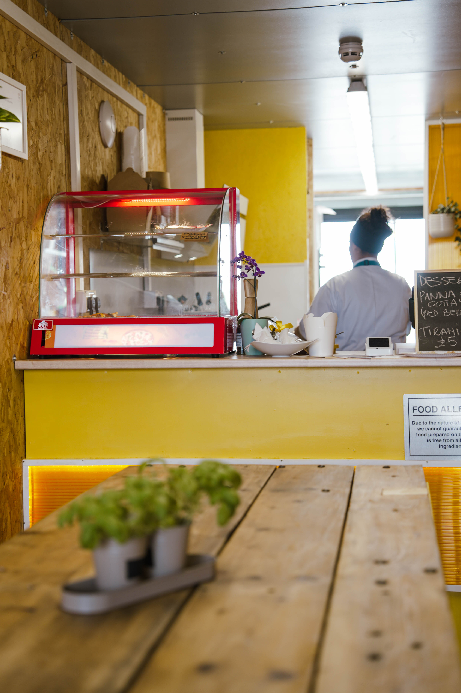

I was born in Bristol, but my heart was raised in Italy. When I was four, my family moved to the Abruzzo region, where my parents opened a restaurant called Gazebo on a hill overlooking the sea in Roseto degli Abruzzi.
That place was more than just a restaurant — it was filled with warmth, hard work, and unforgettable meals. I grew up watching my parents pour their soul into every dish, surrounded by the rhythm of family life and the buzz of the kitchen.

After we returned to Bristol in 2013, I tried a different path. But the call of cooking never left me. I realised that my true purpose was to keep our family’s food traditions alive — and share them with the community around me.
That’s how Impasta Lab was born — a pasta workshop built with love and a deep sense of purpose. Here, I serve the dishes that shaped my childhood: hand-rolled pasta, traditional lasagna, rich sauces, stuzzicheria, and rustic Italian cakes.
Whether you're grabbing lunch, ordering a buffet, or joining a class — Impasta Lab is about connection. Through food, we create community — one dish, one story, one smile at a time.